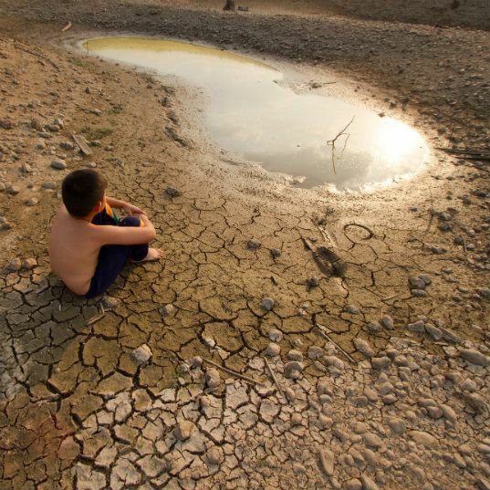
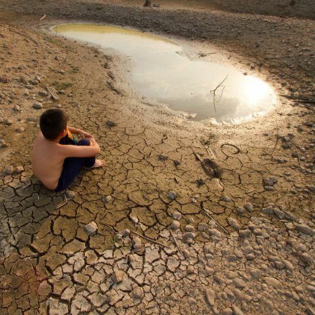
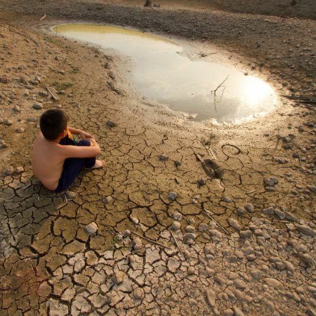

El medio ambiente se refiere al conjunto de condiciones naturales que rodean a los seres vivos y que influyen en su desarrollo y supervivencia. Incluye todos los elementos naturales, como el aire, el agua, el suelo, los seres vivos (flora y fauna) y los factores físicos y químicos que interactúan entre sí. El medio ambiente es esencial para la vida en la Tierra y proporciona los recursos necesarios para la supervivencia de todas las especies, incluyendo los seres humanos.
ESTAS IMAGENES SON ALGUNOS EJEMPLOS

Audio de investigación
Este audio fue grabado por los siguientes estudiantes del grado 8°2
 
